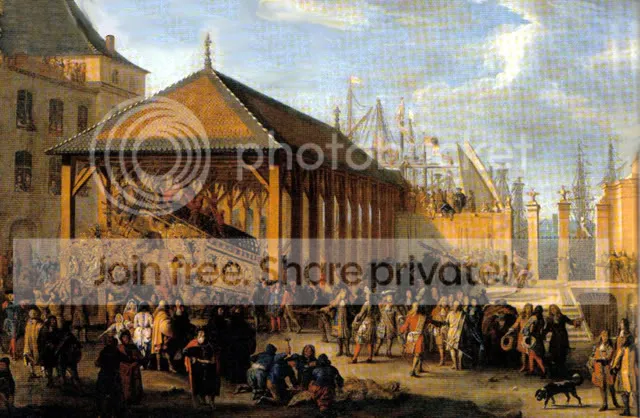

Глядя на известную картину французского живописца Жана Батиста де ла Роза, показывающую посещение галерной верфи в Марселе тогдашним морским министром маркизом Сеньелэ со свитой в 1679 году, никак не подумаешь, что она в какой-то мере отражает уникальное явление в кораблестроении прошлых веков – открытие эры научной организации труда. 
Два галерных мастера, два брата из династии Шаберов, показали виртуозное владение своим ремеслом в замечательном эпизоде, когда галера была построена за одни сутки . Поводом для того, чтобы совершить этот трудовой подвиг, послужил ожидаемый приезд в Марсель Людовика XIV.
Кольбер был удручен невниманием короля к морским делам и искал любые возможности заинтересовать монарха проблемами флота. Тогда и родилась идея показать Людовику, как на его глазах за один день будет построена галера. Еще в октябре 1670 г. Кольбер написал марсельскому интенданту Арнулю, чтобы тот подготовил все необходимое для постройки галеры с рекордной скоростью на случай высочайшего визита. Прошли годы, но король так и не собрался в Марсель. В 1672 году началась война с Голландией. Все мощности марсельского арсенала были задействованы на пополнение военного флота. И только после заключения в 1678 г. Нимвегенского мира вновь был поднят вопрос о поездке короля в Марсель. 26 августа 1678 года Кольбер написал Бродару, новому интенданту марсельского порта, чтобы тот к приезду короля был готов «построить галеру за 24 часа в его присутствии».
Такие сроки являются реальными лишь в том случае, когда все детали галеры будут изготовлены заранее, а на стапеле будет осуществлена лишь сборка корабля («отверточная сборка», как сказали бы наши современники). Но и в этом случае постройка в двадцать четыре часа такого большого судна, как галера водоизмещением около 200 т могла явиться вызовом кораблестроителям любой эпохи. (Справедливости ради надо сказать, что подобная операция однажды была уже проведена в Венеции, когда на глазах высокопоставленных чинов была построена галера. Но, как разъяснил интенданту Бродару кораблестроитель Шабер, речь шла о совсем небольшой галере, которая конструктивно была значительно проще французских галер; кроме того, не был предусмотрен ее спуск на воду.) В семнадцатом веке это была невероятно трудная задача. Она требовала самой тщательной подготовки и планирования. Необходимо было предусмотреть проведение следующих мероприятий:
–Предварительное изготовление всех необходимых деталей. Хотя здесь и не существовало ограничений по времени, но требовалась особая тщательность в работе и высокое качество используемой древесины, так как на устранение возможных дефектов в процессе сборки времени не будет.
-–Полная сборка корпуса галеры «набело» для подгонки всех составных элементов конструкции с большой точностью. Ограничений по времени на эту работу также не было, однако тщательность ее выполнения оказывала, как и в предыдущем случае, решающее влияние на успех всего предприятия.
–Демонтаж собранной конструкции должен быть проведен очень аккуратно, чтобы ничего не повредить. Одновременно должна быть проведена исключительно точная маркировка всех частей, особенно точная там, где были просверлены отверстия для нагелей. Кроме того, эта маркировка должна быть различима при свете факелов или свечей, если придется работать ночью.
–За демонтажем должно следовать складирование частей, организованное в таком порядке, который обеспечил бы последовательное поступление деталей для последующей сборки. И, что очень важно, хранение должно быть организовано в хорошо проветриваемых ангарах, защищенных от воздействия осадков.
Отмеченное выше отсутствие ограничений по времени на различные операции не означало, конечно, что их можно провести за какой угодно срок до назначенного времени. Как бы тщательно ни хранились детали будущей галеры, неизбежно со временем их коробление и другие деформации. Срок до часа «Ч» должен быть разумным.
Все эти приготовления могли осказаться бесполезными, если бы не существовало очень точного плана последующей сборки. В архивах удалось найти такой план, составленный на 23 листах большого формата, охватывающий деятельность более чем одной тысячи людей.
Документ озаглавлен: «Ordre qui se doit observer pour bastir une galère en 24 heures et la faire voguer dans le port, avec les fonctions de chacun des officiers et ouvriers qui doivent y travailler». («Порядок, который должен соблюдаться при постройке галеры за 24 часа и ее выводе в порт, с обязанностями каждого руководителя и рабочего»). Сам проект был осуществлен 10 ноября 1678 г. в присутствии морского министра маркиза де Сеньелэ и герцога Вивоннского, контр-адмирала галер. Непосредственное руководство работами на стапеле осуществляли братья Шаберы – старший, Жан Батист (по праву старшинства он руководил работами на правом борту; так было заведено еще их предками, ибо «dextre », десница, правая рука всегда находилась в привилегированном положении по отношению к « senestre » - левой руке), и младший, Симон (возглавлявший команду левого борта).
Небольшое замечание. П.У. Бэмфорд в упоминавшейся ранее книге считает, что это были не братья, а отец и сын Шаберы. Однако Р.Бурле и Ж.-П. Верн в статье, опубликованной в Histoire Economie et Société, 1997, №1, убедительно опровергают это утверждение. В найденных ими документах о династии галеростроителей Шаберов подтверждается степень родства Жан Батиста и Симона. Наибольшей известностью пользовался Жан Батист. Именно он собирал бригантин (не смешивать с бригантиной: бригантин (brigantin) – тип небольшой галеры) на Большом Канале в Версале и позднее в Рошфоре организовал постройку пятнадцати галер за шесть месяцев.
О том, как был осуществлен сам процесс постройки галеры, - в следующий раз.